The WorldGenV2 World Generator can be
complicated but is broken down into multiple digestable steps that are fun to learn and was made with the
community in mind!
The first step of creating a custom WorldGenV2 world is typing the command /worldgen2 create and filling out the following info!
Create a New World
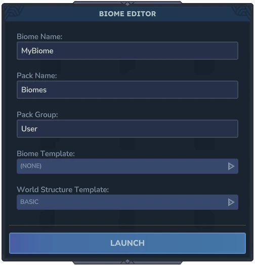
Name of your First Biome!
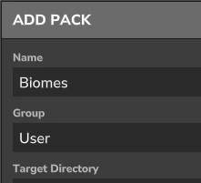
Same identifiers as creating an Asset Pack
Leave these values the same for now
Once you hit 'Launch,' the game will do a few things:
First, it'll create the required WorldGenV2 assets inside the /Server/HytaleGenerator/ folder
of your new/existing mod with a corresponding Instance file in /Server/Instances/.
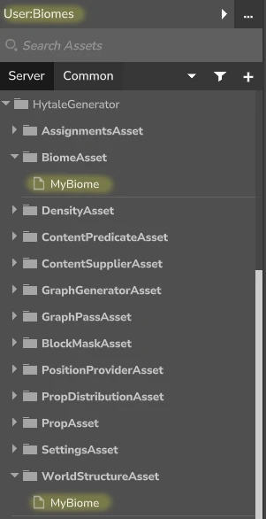
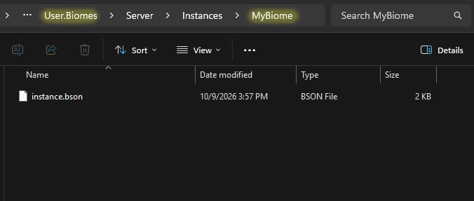
Then, the game will generate a new World based off of the newly created Instance and
teleport your Player into it.
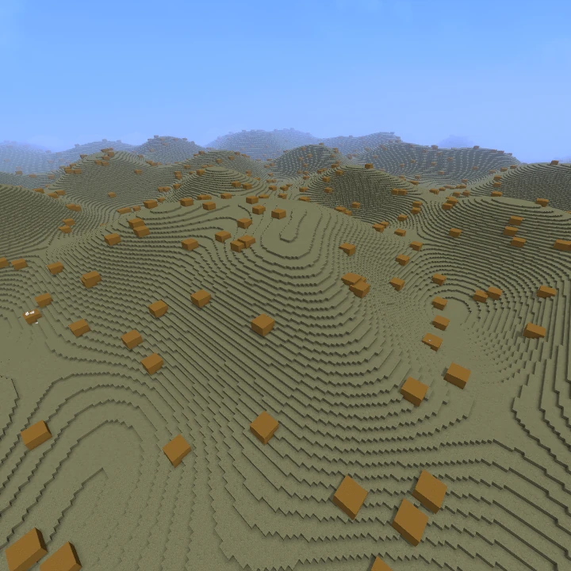
Finally, it runs the command /viewport --radius=5 so you can see your changes live!
Let's test to see if the viewport command worked by making a modification!
Step 1 - Open up the Node Editor
In order to make any modifications, we'll need to open up the Node Editor. This tool will quickly
become your new best friend for World creation!
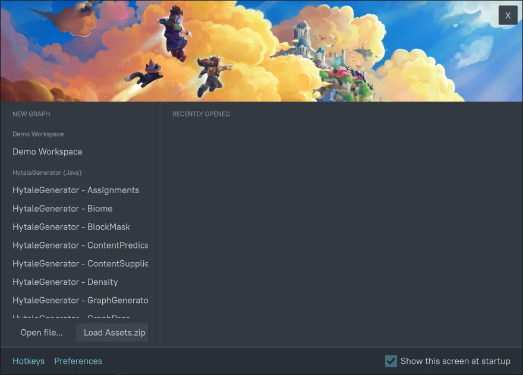
In order to open the Node Editor, you'll need to be in creative mode
and opped. You can press 'O' to switch to Creative Mode and /op self to op yourself.
Afterwards, press 'B' and under 'Assets' select 'Asset Node Editor' to open it!
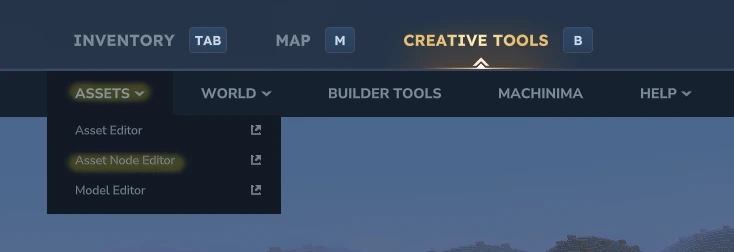
Step 2 - Find the Biome File
Once the Node Editor is open, we'll want to select 'Open file...' and locate the Biome we named earlier.
To go quickly through it for now, paste this line into your File Explorer, to locate your World folder inside Hytale's Files
%appdata%/Hytale/UserData/Saves/
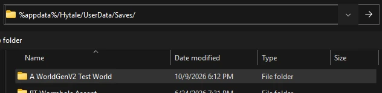
Then, open your World Folder and locate the Biome by navigating to
/[WORLD NAME]/mods/[MOD NAME]/Server/HytaleGenerator/Biomes/
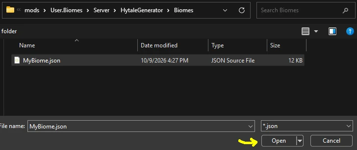
Step 3 - Make a Modification and Save
We'll go over all these parts in a bit but we first only want to see if our Viewport is working, so any
small modification will do.
What I'll modify is the Curve Points in the Terrain Density to move the terrain up by 10 blocks by setting the
'In' Points of the 'Manual Curve' to '10' and '60' respectively.
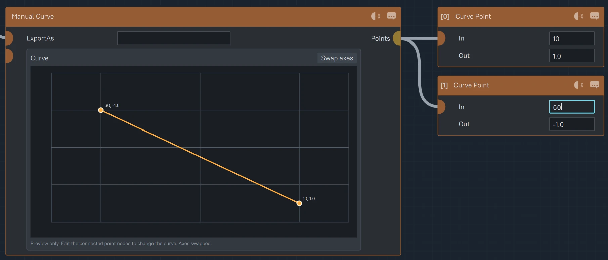
After Saving by hitting Ctrl-S, we can go back to the game and see our changes update live!
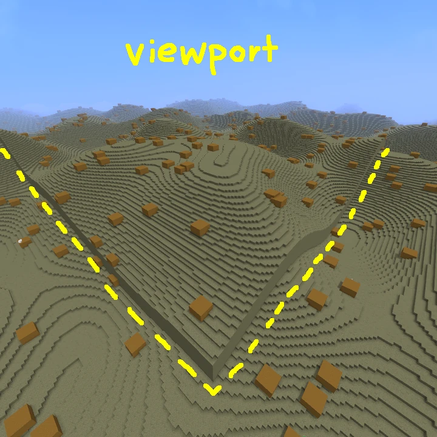
You've created and modified your first Biome! Now is the time to experiment!
Where you go is up to you as you build out your world, but I generally recommend following the steps in the
order of the articles listed on the Website. However, I have found staring at stone gets boring after a while
without adding some materials, grass, and trees in between!
So this last diagram should hopefully point you in the right direction if you decide to jump around!
WorldGenV2 Structure
Instance
Controls the Gameplay like Breach Eventsinstance.bson{
...
"WorldGen": {
"Type": "HytaleGenerator",
"WorldStructure": "[Asset Name]"
}
...
}
The Tints, Weather Events, NPCs, & Sounds that make up a Biome
The last helpful info to know is Hytale's file organization! This is helpful for locating files to open up
in the Node Editor!
For example, it can be very useful to open up Hytale's default Biome assets to figure out how they've created
some of their features or try out any of their examples in the 'Examples' folder! You can either 'Duplicate' the
Asset in the Asset Editor or locate them using the following method.
Location of Hytale's Files %appdata%/Hytale/install - Hytale's Install Location UserData - Your Save Data data/[pre-release, etc]/ - Your Save Data if you're not on the 'Release' patchline
Hytale's Install Location /install/[pre-release, release, etc]/package/game/latest/Assets.zip - Hytale's Default Assets
Your Save DataMods - Global Mods Saves/[World Name]/Mods/ - Mods Local to this World
Asset Pack
Once you've located Hytale's Assets.zip or your Mod's Folder, everything besides the WorldStructure files
inside of the /Server/HytaleGenerator/ folder can be opened and edited inside the Node Editor.
However, File Explorer can't open files inside a zip file so for Hytale's Assets.zip
files you'll want to Extract the
/Server/HytaleGenerator/ files somewhere else you can easily access later like your
computer's Documents folder.
Next Up